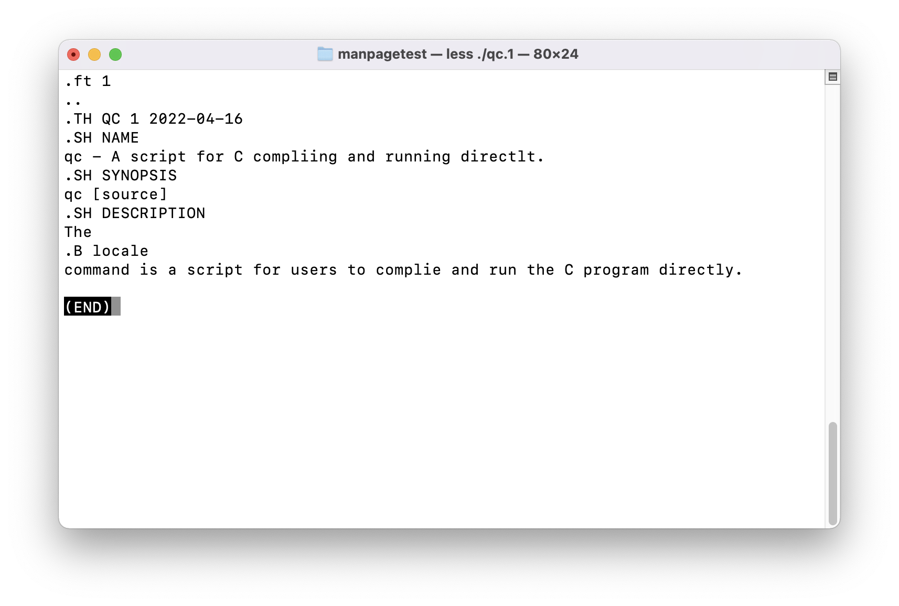

前言
在 Linux 和 macOS
中，经常需要使用man xxx来查看一个程序、系统调用等的介绍和使用方法。而这个界面被称为manual page，但是有时候会被简称为manpage。
在日常使用中，我很好奇：
man page是一个什么格式的文件？- 如何编写它？
- 它一般存放在什么地方？
man page可以说是 UNIX 和 Linux 的一个很重要的部分了，想要深入了解 UNIX 和 Linux
的话，我觉得这是需要了解的一部分内容。接下来就来逐一研究解释这些问题。相信当你读完这篇博客之后，你会对man程序和man page有较为深入的理解，并且可以加深对
Linux 的理解。
man page 是一个什么格式的文件？
真正的 UNIX 书籍应该是用 troff 写成的。
这句话出自UNIX 之父 W.Richard Stevens《UNIX 环境高级编程（第一版）》的前言的感谢部分。这本书也是经典中的经典，很多人不管看没看过，但书架上或者硬盘里都会有一本。
那么这句话告诉了一个关键信息：UNIX 有一个非常重要的文本处理器 troff。
troff 是一个排版系统。类似现在比较流行的 Markdown，以及学术上使用较多的LaTex。
但是就像 UNIX 以及很多诞生于 UNIX 的程序一样，由于历史原因（想知道可以看《UNIX 传奇》这本书，作者就是当初贝尔实验室其中的一员，也是 UNIX 系统的9号用户），troff 也有了现代版本——groff。
groff 是 GNU版本的 troff，对 troff 在功能上兼容，但是有很多扩展，具体差别可以在终端中使用命令man 7 groff_diff来查看。
**而manpage的格式，也正是 troff。Ubuntu 里是 nroff（也是 troff 的衍生品）。
为了证明这一点，Mac 用户
可以使用以下命令来查看 pwd(1) 的manpage的文件类型：
$ file /usr/share/man/man1/pwd.1
/usr/share/man/man1/pwd.1: troff or preprocessor input text, ASCII text
Linux 用户可以使用以下命令查看文件内容，因为 Ubuntu 把文件用 gzip 归档，查看之后可以看到是 troff 语法的：
$ less /usr/share/man/man1/pwd.1
不过现在man支持读取 HTML 文件，所以也可以利用 HTML 来编写manpage，但是不常见。
如何编写 manpage
在知道manpage是 troff 格式之后，那么知道 troff/groff 语法之后，就可以编写了。
关于 groff 的使用方法，可以使用info groff来查看非常详细的教程。
关于 groff 的语法，可以使用man 7 groff来查看。
groff 的官网：https://www.gnu.org/software/groff/#documentation
这里演示一下：

运行效果：

HTML的话就不赘述了。
manpage 存放在什么地方
man命令通过环境变量$MANPATH和配置文件/private/etc/man.conf文件（macOS）或者/etc/manpath.config（Ubuntu）来找到存放manpage的目录们。
所以查看二者就知道存在哪里来。并且，我们也可以通过修改二者，或者向制定目录来添加manpage。
结尾
好啦，这样就可以写一个manpage啦。
希望能帮到有需要的人～